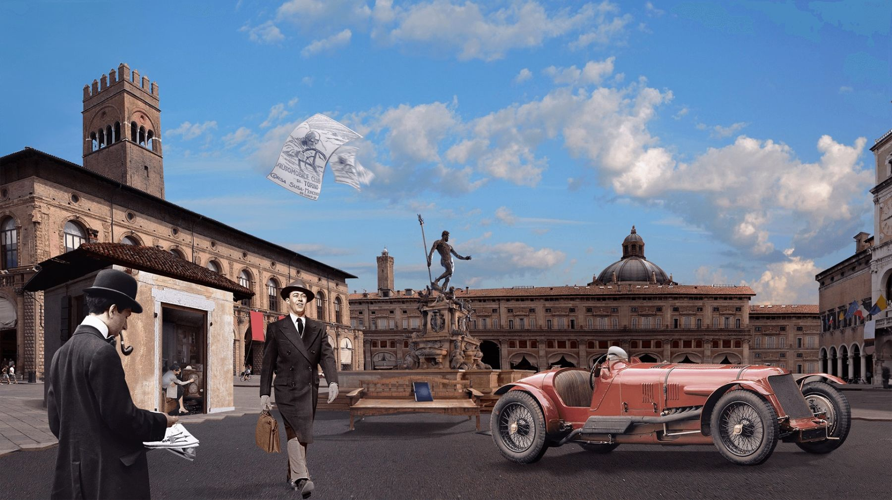

Maserati a été créée en 1914 à Bologne par Alfieri Maserati. Issu d’une fratrie de 7 frères, 5 seront impliqués dans la création de la marque. Tous passionnés par la mécanique, et l’automobile. Le sixième frère, Mario Maserati, lui n’était pas intéressé par l’automobile, lui ce qui lui plaisait c’était l’art. Il a d’ailleurs étudié aux Beaux Arts. C’est pour cela, que ses frères lui ont confié la tâche de réaliser le logo Maserati.Carlo, l'aîné, fut le premier à se lancer. Il fabriqua des vélos, puis des motos. Plus tard il devient pilote d'essai chez Fiat et Isotta Fraschini, mais il se tue lors d’une course en 1910. En 1917, Alfieri se lance dans la fabrication de bougies d'allumage. Alfieri et Ettore sont engagés en 1922 par la firme Diatto pour réaliser une première voiture de course : la Tipo 20. Malheureuse en Grand Prix, la Diatto sera pourtant une voiture rapide et fiable. Elle le montrera en enlevant son premier grand succès, en course d'endurance, aux 24 Heures de Monza, en 1924. La seconde voiture, une 2 litres à moteur huit-cylindres, conçue par Alfieri, fut moins brillante, et son échec conduisit Diatto à se retirer de la course. En 1926, les deux frères décident de construire leurs propres voitures de course. C’est à cette date qu'est vraiment lancée la marque automobile Maserati. La première voiture Maserati fut développée sur la base de la Diatto et prit l'appellation de Typo 26 en 1926. C'est la première « vraie » Maserati. Elle devient vite la redoutable rivale des Bugatti. En 1926, elle gagne la Targa Florio. Alfieri meurt en 1932. Avec son décès, la firme perd son ingénieur et surtout son gestionnaire. Les trois frères Bindo, Ernesto et Ettore, continuent l'affaire. Bindo prend la direction générale, Ernesto la direction technique et Ettore a la responsabilité financière. Il s'avérera être le maillon faible de l'organisation qui malgré des succès sportifs et commerciaux sera vendue à Adolfo Orsi.
Lorsque la création du logo a été confiée à Mario Maserati par ses frères, il a regardé par sa fenêtre qui donnait sur la grande place à Bologne, ville de naissance des frères Maserati et ville où est apparue la première usine Maserati, pour peut-être y trouver l'inspiration. Sur cette grande place, il y a une grande fontaine avec une statue de Neptune, qui est la représentation de Poseidon dans la mythologie romaine.  Il a donc décidé d'utiliser le trident de Neptune comme base du logo. Sans le savoir, il a fait de cet attribut mythologique, un attribut aujourd'hui indissociable de la marque Maserati.